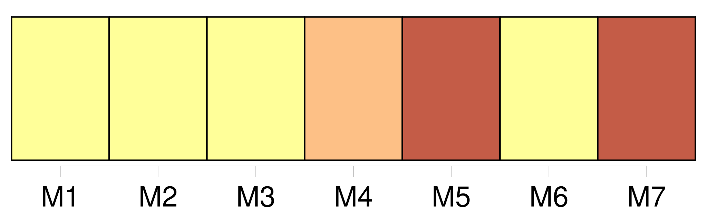
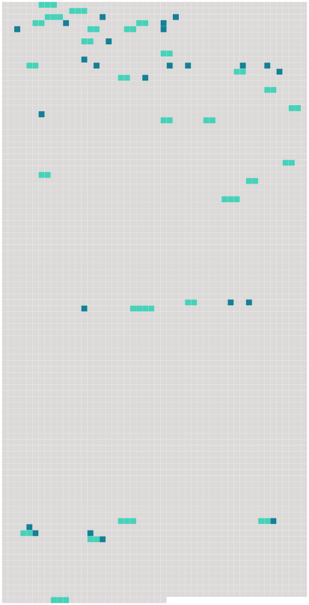

Longueur nb maillons : 51 mentions |
 |
Si quelques-uns des faits allégués par [l'époux demandeur] , donnent lieu à une poursuite criminelle de la part du ministère public, l'action en divorce restera suspendue jusqu'après le jugement du tribunal criminel ; alors elle pourra être reprise, sans qu'il soit permis d'inférer du jugement criminel aucune fin de non-recevoir ou exception préjudicielle contre [l'époux demandeur] [1 phrases]
Toute demande en divorce détaillera les faits : elle sera remise, avec les pièces à l'appui, s'il y en a, au président du tribunal ou au juge qui en fera les fonctions, par [l'époux demandeur] en personne, à moins qu' [il] n'en soit empêché par maladie ; auquel cas, sur [sa] réquisition et le certificat de deux docteurs en médecine ou en chirurgie, ou de deux officiers de santé, le magistrat se transportera au domicile [du demandeur] pour y recevoir [sa] demande. [1 phrases] Le juge, après avoir entendu [le demandeur] , et [lui] avoir fait les observations qu'il croira convenables, paraphera la demande et les pièces, et dressera procès-verbal de la remise du tout en [ses] mains.
Ce procès-verbal sera signé par le juge et par [le demandeur] , à moins que [celui -ci] ne sache ou ne [puisse] signer ; auquel cas il en sera fait mention. [3 phrases]
Au jour indiqué, le juge fera aux deux époux, s'ils se présentent, ou [au demandeur] , s' [il] est seul comparant, les représentations qu'il croira propres à opérer un rapprochement : s'il ne peut y parvenir, il en dressera procès-verbal, et ordonnera la communication de la demande et des pièces au commissaire du Gouvernement, et le référé du tout au tribunal. [4 phrases]
[Le demandeur] , en vertu de la permission du tribunal, fera citer le défendeur, dans la forme ordinaire, comparaître en personne à l'audience à huis clos dans le délai de la loi ; [il] fera donner copie, en tête de la citation, de la demande en divorce et des pièces produites à l'appui. [1 phrases]
À l'échéance du délai, soit que le défendeur comparaisse ou non, [le demandeur] en personne, assisté d'un conseil s'il [le] juge à propos, exposera ou fera exposer les motifs de [sa] demande ; [il] représentera les pièces qui l'appuient, et [nommera] les témoins qu' [il] se propose de faire entendre. [1 phrases] Si le défendeur comparaît en personne ou par un fondé de pouvoir, il pourra proposer ou faire proposer ses observations, tant sur les motifs de la demande que sur les pièces produites par [le demandeur] et sur les témoins par [lui] nommés.
Le défendeur nommera, de son côté, les témoins qu'il se propose de faire entendre, et sur lesquels [le demandeur] fera réciproquement [ses] observations. [5 phrases]
Dans le cas où le défendeur n'aurait pas comparu, [le demandeur] sera tenu de lui faire signifier l'ordonnance du tribunal, dans le délai qu'elle aura déterminé. [5 phrases]
Il fera droit à la demande, si elle lui paraît en état d'être jugée ; sinon il admettra [le demandeur] à la preuve des faits pertinens par [lui] allégués, et le défendeur à la preuve contraire. [1 phrases]
À chaque acte de la cause, les parties pourront, après le rapport du juge, et avant que le commissaire du Gouvernement ait pris la parole, proposer ou faire proposer leurs moyens respectifs, d'abord sur les fins de non-recevoir, et ensuite sur le fond mais en aucun cas le conseil [du demandeur] ne sera admis, si [le demandeur] n'est pas comparant en personne. [18 phrases] Après la clôture des deux enquêtes ou de celle [du demandeur] , si le défendeur n'a pas produit de témoins, le tribunal renverra les parties à l'audience publique, dont il indiquera, le jour et l'heure ; il ordonnera la communication de la procédure au commissaire du Gouvernement, et commettra un rapporteur.
Cette ordonnance sera signifiée au défendeur, à la requête [du demandeur] , dans le délai qu'elle aura déterminé. [3 phrases]
Le jugement définitif sera prononcé publiquement : lorsqu'il admettra le divorce, [le demandeur] sera autorisé à se retirer devant l'officier de l'état civil pour le faire prononcer. [4 phrases]
Après une année d'épreuve, si les parties ne se sont pas réunies, [l'époux demandeur] pourra faire citer l'autre époux à comparaître au tribunal, dans les délais de la loi, pour y entendre prononcer le jugement définitif, qui pour lors admettra le divorce. [33 phrases]
Dans l'un et l'autre cas [le demandeur] sera déclaré non recevable dans [son] action ; [il] pourra néanmoins en intenter une nouvelle pour cause survenue depuis la réconciliation, et alors faire usage des anciennes causes pour appuyer [sa] nouvelle demande. [1 phrases]
Si [le demandeur en divorce] nie qu'il y ait eu réconciliation, le défendeur en fera la preuve, soit par écrit, soit par témoins, dans la forme prescrite en première section du présent chapitre. [65 phrases]
Pour quelque cause que le divorce ait lieu, hors le cas du consentement mutuel, l'époux contre lequel le divorce aura été admis, perdra tous les avantages que [l'autre époux] lui avait faits, soit par leur contrat de mariage, soit depuis le mariage contracté. [1 phrases]
[L'époux] [qui] aura obtenu le divorce, conservera les avantages à [lui] faits par l'autre époux, encore qu'ils aient été stipulés réciproques et que la réciprocité n'ait pas lieu. [1 phrases] Si les époux ne s'étaient fait aucun avantage, ou si ceux stipulés ne paraissaient pas suffisans pour assurer la subsistance de [l'époux] [qui] a obtenu le divorce, le tribunal pourra [lui] accorder, sur les biens de l'autre époux, une pension alimentaire, qui ne pourra excéder le tiers des revenus de cet autre époux. [2 phrases]
Les enfans seront confiés à [l'époux] [qui] a obtenu le divorce, à moins que le tribunal, sur la demande de la famille ou du commissaire du Gouvernement, n'ordonne, pour le plus grand avantage des enfans, que tous ou quelques-uns d'eux seront confiés, aux soins soit de l'autre époux, soit d'une tierce personne. [17 phrases]
Lorsque la séparation de corps prononcée pour toute autre cause que l'adultère de la femme, aura duré trois ans, l'époux qui était originairement défendeur, pourra demander le divorce au tribunal, qui l'admettra, si [le demandeur originaire] , présent ou dûment appelé, ne consent pas immédiatement à faire cesser la séparation. |
 |
Il est possible de télécharger la ressource sur la page Ortolang |
Si vous avez des questions ou vous voyez des erreurs, merci d'envoyer un mail à silvia.federzoni89@gmail.com |